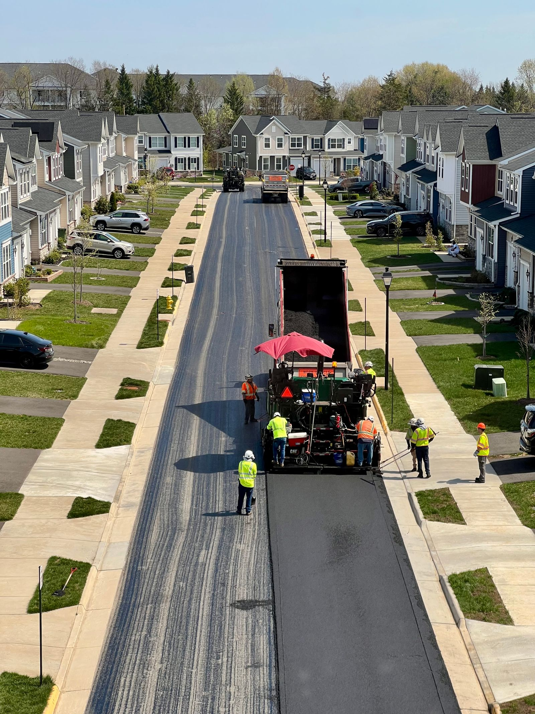
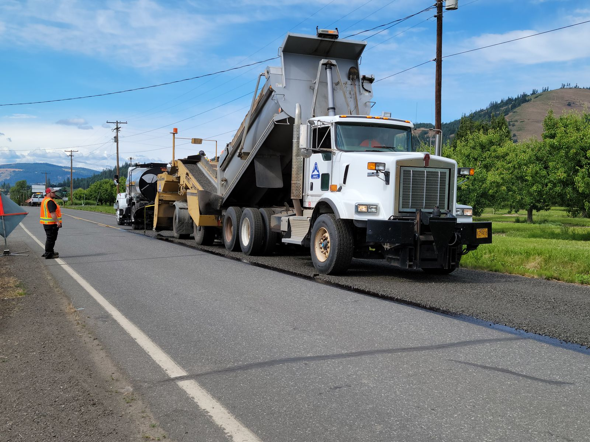

Asphalt paving · Bryan, TX
Fair pricing, laid down as straight as the driveway.
J&W Asphalt Paving handles residential driveways and commercial lots around Bryan — real reviewers specifically call out being treated fairly on price and scope, not talked into more than they needed.
Illustrative stock photo (Pexels, photographer Yelena HeyTam) — not an actual J&W job.
What we pave
Asphalt work, done straight
General categories of asphalt work — confirm your exact job and get a real quote by phone.
Residential driveways
New driveway paving and full replacements for homes around Bryan.
Commercial lots
Parking lot paving for businesses, sized to your traffic and budget.
Patching & repair
Potholes, cracks, and low spots fixed before they get worse.
Sealcoating
Protective sealcoat to extend the life of existing asphalt.
Overlay & resurfacing
A fresh surface over worn asphalt without a full tear-out.
Grading & base work
Proper base prep so the surface actually holds up.
These are general categories of paving work — call (979) 900-8027 to confirm J&W can handle your exact job and get a quote.
The crew
No games on price, no surprises on scope
J&W Asphalt Paving is a small, local paving outfit serving Bryan, TX. What comes through in the record isn’t marketing copy — it’s customers describing a company that laid out the actual cost and scope of the job plainly, instead of the runaround some homeowners say they got elsewhere.
One reviewer described having both a home and a business paved by J&W after feeling taken advantage of by other companies on cost; another called the driveway work great and said the crew made sure she was happy with everything before they left. J&W replied personally, thanking her by name.
Business details verified via J&W Asphalt Paving’s public Google Business listing, checked 2026-09-05. Full sourcing is in this demo’s README.

On Google
A short record, and it's a clean one
J&W Asphalt Paving’s Google listing shows a real, if short, review record: three reviews, every one of them five stars. That's honestly disclosed here as exactly what it is — a small, thin sample, not padded or inflated.
Full written reviews will appear here once connected — nothing invented, nothing edited, exactly what’s posted on Google.
5.0 rating · 3 reviews, from J&W Asphalt Paving’s public Google Maps listing — verified 2026-09-05.
Service area
Bryan, TX and the surrounding area. No public street address is listed — J&W works as a service-area business, coming to you.
Hours
Google’s listing shows this business as open 24 hours — call anytime to schedule an estimate, verified 2026-09-05.
Get in touch
Ready for a driveway that lasts?
Call and describe the job — driveway, lot, patch, or full resurface — and get a straight quote.
Call (979) 900-8027